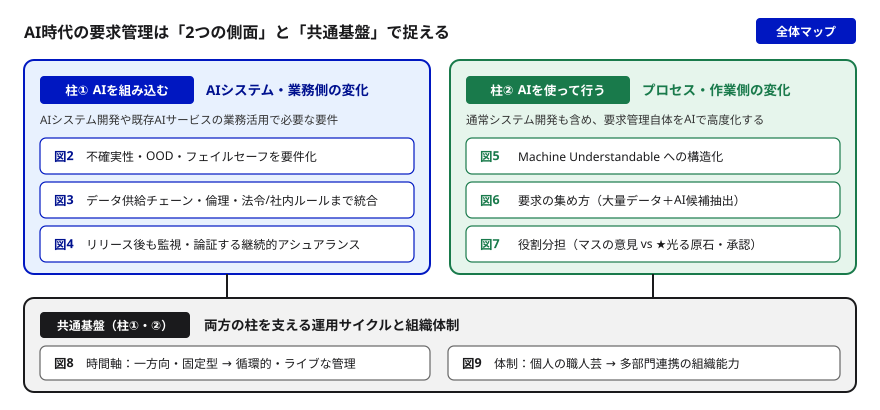
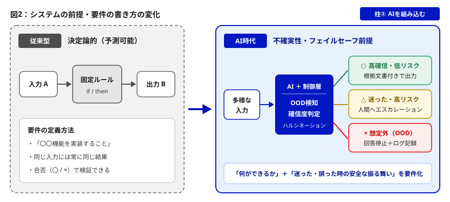
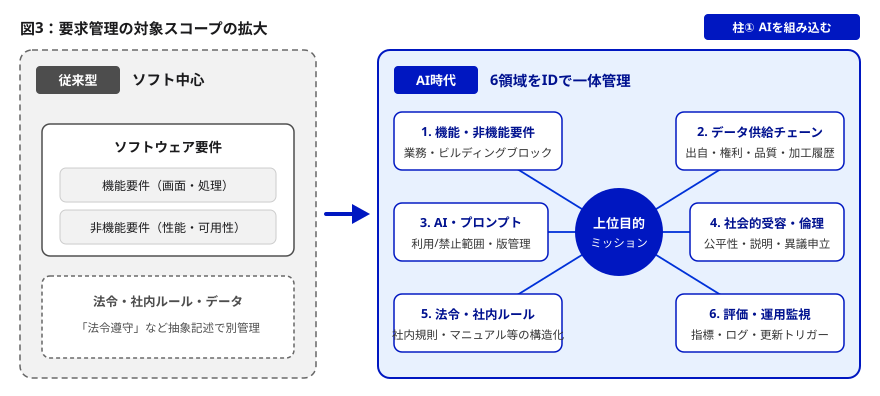
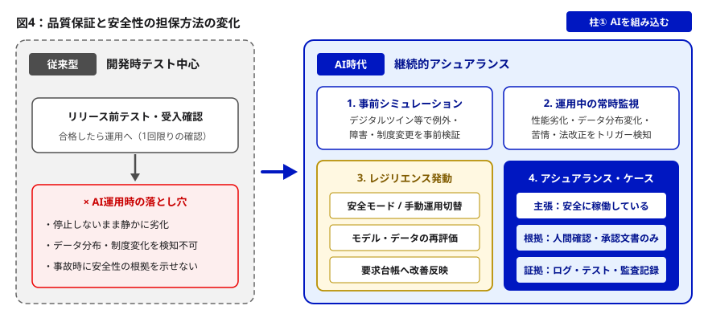
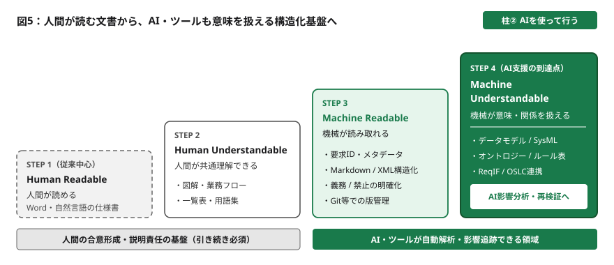
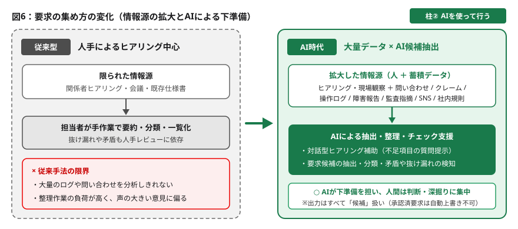
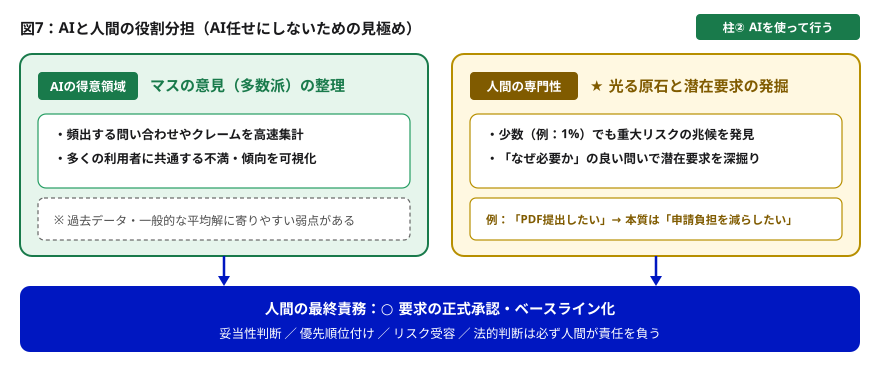
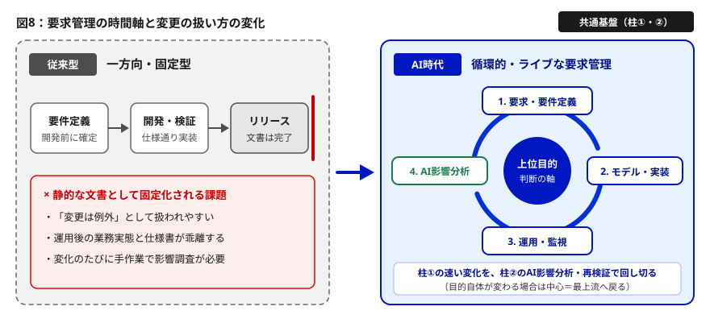
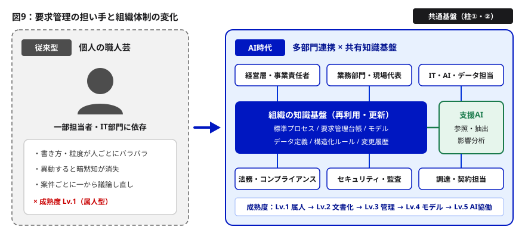

IPA「AI 時代の要求管理ハンドブック」から読み解く変化点
2026年11月5日、独立行政法人 情報処理推進機構（IPA）から『AI 時代の要求管理ハンドブック ～経営・現場・開発がともに描く、問いから実現への道筋～（Version 1.0.0）』が公開されました。全129ページにわたるボリュームで、これまでのシステム開発における要求管理の考え方を、AI時代に向けて大きくアップデートした内容になっています。
要件定義やプロジェクト管理の現場に携わる立場として通読してみると、単なるAI開発の解説書ではなく、従来の要求管理のどこが変わり、どこが変わらないのかが体系的に整理されている点が印象的でした。本記事では、このハンドブックで示されている従来の要求管理からの変化点を、8つの図解とともにまとめてみます。
1. ハンドブックの全体像：2つの側面と共通基盤
このハンドブックを読み解くうえで最初に押さえておきたいのは、AI時代の要求管理が「AIを組み込むための要求管理」と「AIを使って行う要求管理」という2つの柱で書かれている点です。前者はAIシステムの開発や既存のAIサービスを用いた業務改善において新しく必要となる要件の整理を指し、後者はAIを組み込まない通常のシステム開発も含めて、要求管理の作業そのものをAIで高度化することを指します。
また、本書はウォーターフォール開発やアジャイル開発といった特定の開発手法に限定しておらず、どの開発手法を採る場合でも土台となる「要求の可視化・構造化・継続管理」に焦点を当てています。さらに、利用者や関係者の漠然とした困りごとや期待を「要望」、実現したいこととして整理したものを「要求」、実装や評価が可能な事項へ具体化したものを「要件」と明確に区別したうえで、要求のライフサイクル全体を継続的に管理する活動を広義の「要求管理」と位置づけています。
本記事では、ハンドブックで示されている変化点を「柱① AIを組み込む」「柱② AIを使って行う」、そして両者を支える「共通基盤」の3つに整理しました。全体像と各図の対応関係を示したのが図1です。

2. 柱①：AIを組み込むための要求管理（AIシステム・業務側の変化）
まず1つ目の柱は、AIを組み込んだシステムを新たに開発する場合や、既存のAIサービス等を問い合わせ対応や審査などの業務改善へ取り入れる場合に、どのような要件を定義すべきかという観点です。ここでは従来のソフトウェア開発とは異なる3つの変化点が示されています。
決定論的モデルから不確実性・フェイルセーフ前提へ
従来のソフトウェアは、同じ入力に対して常に同じ出力を返す決定論的な動作を前提としていました。そのため、要件も「特定の機能を実装すること」のように合否で検証できる形で記述するのが一般的でした。
一方、機械学習や生成AIを組み込んだAIシステムは確率的に振る舞います。出力の揺らぎやハルシネーション、さらに学習時に想定していない想定外の入力（OOD）に対して不安定な出力を返すリスクが常に伴います。そのためAI時代の要件定義では、「何ができるか」だけでなく、「確信度が低いとき」「高リスクな判断を求められたとき」「想定外の入力が来たとき」に無理に回答せず安全側へ倒すフェイルセーフの振る舞いや、人間へエスカレーションする条件を要件として明記する必要があります（図2）。

ソフトウェア中心から6領域の一体管理へ
従来の要求管理は、画面や処理などの機能要件と、性能や可用性などの非機能要件といったソフトウェア中心のスコープで整理されることが多く、法令や社内ルールは「関連法令を遵守すること」のような抽象的な記述にとどまりがちでした。
AI時代には、ソフトウェアの機能・非機能だけではシステムの信頼性を担保できません。データの出自や権利処理、品質、加工履歴を部品調達のように管理するデータ供給チェーン、プロンプトや参照文書の利用・禁止範囲、バイアスや異議申立て手順を含む社会的受容性・倫理、さらに法令や社内規則・マニュアルを具体的な業務・システム要件へ変換したルール要求、運用後の監視要件まで含めた6つの領域を、上位目的のもとでIDによって一体管理する姿が求められます（図3）。

リリース前テスト中心から継続的アシュアランスへ
従来の品質保証はリリース前のテストと受入確認に重点が置かれており、運用開始後はエラーやシステム停止といった明確な障害が起きた際に対応する形が中心でした。
しかしAIを組み込んだシステムは、コードを変更していなくても、入力データの傾向変化や外部AIモデルの更新、制度改正などによって、正常稼働しているように見えながら静かに性能劣化やバイアスが進行することがあります。このため、デジタルツイン等による事前の例外・障害シミュレーションに加え、運用中も性能やデータ分布を常時監視し、しきい値を超えたら安全モードへの切り替えや再評価を発動するレジリエンスが求められます。あわせて、システムが現在も安全に稼働していることを「主張・根拠・証拠」の構造で説明し続けるアシュアランス・ケースの継続更新が重要になります（図4）。

3. 柱②：AIを使って行う要求管理（プロセス・作業側の変化）
2つ目の柱は、AIをプロダクトに組み込むかどうかにかかわらず、要求定義や要求管理の作業そのものにAIを活用して高度化していく観点です。ここでは表現形式、要求の集め方、そしてAIと人間の役割分担の3点に大きな変化があります。
人間が読む文書から機械も意味を扱える構造化基盤へ
これまでの要求定義書は、人間が読んで確認することを前提とした自然言語の文書が中心でした。しかし文章だけでは関係者間で解釈がずれやすく、変更が起きた際にAIやツールを使って影響範囲を自動解析することも困難です。
ハンドブックでは、人間が読める文書を土台としつつ、図表や業務フローで人間が共通理解しやすい形へ整理し、さらに要求IDやメタデータ、MarkdownやXMLによって機械が読み取れる形へ、最終的にはデータモデルやオントロジー、要求交換標準のReqIFやライフサイクル連携のOSLCを用いて「機械が意味や関係を扱える状態」へと段階的に構造化していく道筋を示しています（図5）。社内規則やマニュアルも同様に構造化しておくことで、AIによる影響調査や監査支援が機能するようになります。

人手ヒアリング中心から大量データとAI候補抽出へ
従来の要求獲得は、限られた関係者へのヒアリングや会議、既存仕様書の調査をもとに、担当者が手作業で要約・分類・一覧化を行うスタイルが中心でした。この方法では大量のログや問い合わせを分析しきれず、整理負荷の高さから属人化しやすいという限界がありました。
AI時代には、人へのヒアリングや現場観察に加え、問い合わせ履歴、クレーム、操作ログ、障害報告、監査指摘、SNS、社内規則といった蓄積データまで情報源が広がります。対話型AIによるヒアリングの不足項目チェックや、大量データからの要求候補抽出、矛盾や抜け漏れの検知をAIに下準備させることで、人間は判断や深掘りに集中できるようになります。ただし、AIの出力はあくまで候補として扱い、承認済みの要求をAIに自動上書きさせない設計が前提とされています（図6）。

AIの大量整理と人間の「光る原石」発掘・最終承認
AIによる要求抽出が強力になる一方で、ハンドブックはAIへの丸投げに対する注意点も丁寧に述べています。AIは大量データから頻出する不満や多数派の傾向、すなわち「マスの意見」を集計・整理することを得意としますが、過去データや一般的な平均解に寄りやすい性質を持っています。
そのため、全体の1パーセントにも満たない少数意見の中に潜む重大事故の兆候や、新しい価値につながる発想、利用者がまだ言葉にできていない潜在要求といった「光る原石」を見極めるには、人間の専門性や現場知、「なぜそれが必要なのか」という良い問いが欠かせません。そして最終的に、要求の妥当性判断、優先順位付け、リスク受容、法的判断、正式承認の責任は必ず人間が負うという明確な役割分担が示されています（図7）。

4. 共通基盤：両方の柱を支える運用サイクルと組織体制
ここまで見てきた2つの柱を実務で機能させるために、ハンドブック全体を通じて土台として位置づけられているのが、要求管理の時間軸と組織体制の転換です。
一方向・固定型から循環的でライブな要求管理へ
従来の現場でよく見られたのは、開発前の上流工程で要件を確定し、仕様書を引き渡して完了とする一方向・固定型の運用でした。このやり方では変更が例外として扱われやすく、運用開始後に業務実態と文書が乖離してしまいます。
AI時代には、上位目的を判断の軸に据えながら、要求定義・モデル化・実装・運用監視・見直しを回し続ける循環的でライブな要求管理へと転換します。なお、この考え方は「初期の要求定義を曖昧にして後から直せばよい」という意味ではありません。事前に決められる目的や評価基準、法令要件は開発前に必要な水準まで合意したうえで、運用後の環境変化やデータ変化を柱②のAIによる影響分析・再検証で追従し続けます。また、事業目的やゴール自体が変わる場合には、個別要件の修正にとどめず最上流のビジネス又はミッション分析へ戻って再構成する点が強調されています（図8）。

個人の職人芸から多部門連携の組織能力へ
最後の変化点は担い手と体制です。これまで要求管理は、一部の業務担当者やIT部門の経験と勘に頼る「個人の職人芸」になりがちであり、担当者の異動とともに暗黙知が失われ、プロジェクトごとに一から議論をやり直すケースが少なくありませんでした。
AI時代には、経営層・事業責任者、業務部門、IT・AI・データ担当、法務・コンプライアンス、セキュリティ、監査、調達といった多部門がそれぞれの責任を持ち寄り、標準プロセスや要求管理台帳、モデル、構造化ルールを「組織の知識基盤」として蓄積・再利用する体制が求められます。この知識基盤を整備しておけば支援AIの精度も高まり、組織の成熟度を「Lv.1 属人型」から「Lv.5 AI協働型」へと段階的に引き上げていくことができます（図9）。

終わりに
IPAの『AI 時代の要求管理ハンドブック』を通して見えてくるのは、AIがどれほど進化しても要求管理そのものが不要になるわけではなく、むしろ人間側の基礎力がより重要になるという現実です。複雑な既存業務や不要な承認手順をそのままAI化するのではなく、まず上位目的に照らしてシンプル化し、ルールベースや既存システムといったAI以外の手段とも比較したうえで適用範囲を見極める姿勢は、時代が変わっても揺るがない本質だと感じます。
また、ハンドブックでは最初からすべての成果物や高度なツールを完璧に揃えるのではなく、プロジェクトの規模やリスクに応じてテーラリングし、簡易な要求管理台帳や小規模案件での試行から段階的に定着させることを推奨しています。予算計画上の初期目安として総プロジェクトコストの2から5パーセント程度を出発点に挙げている点も、実務で検討する際の現実的な参考になります。
より詳しい解説や成果物一覧、国際標準との対応関係については、ぜひIPA公開の原本PDF『AI 時代の要求管理ハンドブック（Version 1.0.0）』をご覧ください。また、AI時代の開発・運用における計画と進捗の見通しについては、関連記事「AI駆動開発におけるWBSとガントチャートの使い所」や「デジタル庁の研修資料から見たWBSの要点」もあわせて参考にしていただければ幸いです。
最後までお読みいただきありがとうございました。